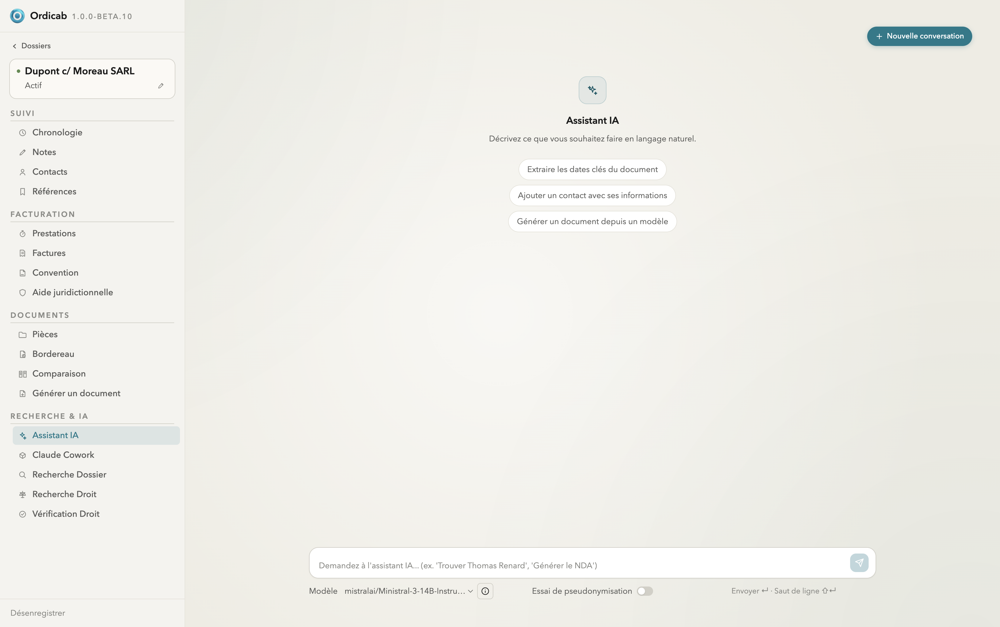

Intelligence artificielle
IA : vue d'ensemble & comparatif
Ordicab propose deux manières de travailler avec l'IA, complémentaires et non exclusives. Le choix dépend surtout du niveau de confidentialité requis et de la puissance souhaitée.
Deux approches
- L'assistant intégré — un chat directement dans le dossier, qui exploite son contexte (contacts, pièces, notes, chronologie). Il fonctionne avec un modèle local (aucune donnée ne quitte la machine) ou via une clé API externe pour plus de puissance.
- IA Cowork — vous exportez une copie pseudonymisée du dossier pour la confier à un agent externe (par exemple Claude Code), puis réimportez les livrables. Les identités sont remplacées à l'export et restaurées au retour.

Assistant IA intégré au dossier — chat avec actions suggérées et choix du modèle
Comment choisir ?
- Données sensibles, traitement simple → assistant intégré en modèle local.
- Besoin de puissance, données maîtrisées → assistant intégré via clé API, avec essai de pseudonymisation.
- Travail volumineux ou outillé (analyse de nombreuses pièces, rédaction longue) → IA Cowork avec export pseudonymisé.
Pseudonymisation. Que ce soit pour l'assistant via API ou pour Cowork, Ordicab peut remplacer les identités par des marqueurs neutres avant l'envoi, puis les restaurer dans les résultats.
Les deux approches sont détaillées dans Assistant intégré et IA Cowork. La configuration du modèle se fait dans Paramètres → Configuration IA.
Suivant : Assistant intégré →